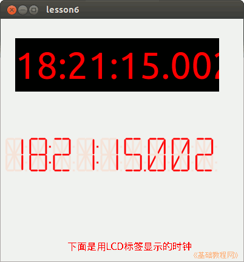

2014-2015 第一学期九年级程序设计教学设计
作者：TeliuTe 来源：基础教程网
六、学会使用定时器Timer 返回目录 下一课
（一）教学设计
1、学习目标：
2、注意事项：绕过弯来，既不要跳也不要落，一楼过了二楼
3、教学过程：
1）教师准备学案和板书；
2）学生整队进入，开机抄黑板上笔记；
3）教师讲解板书演示操作；
4）学生打指法、日志、完成操作；
5）教师打勾记录学生指法成绩，检查日志和操作；
注：学生抄完笔记就开始打指法、日志，老师讲完后再继续完成；
（二）板书设计(学生笔记)
06学会使用定时器Timer
1.定时器用来随时更新显示
2.右边的属性Enabled设为True
3.时间显示在标签里，一秒更新一次
label1.text=time
操作图示：

（三）课后记
第6课 学会使用定时器
2014-10-21 12:00
第6课 学会使用定时器
1、画一个标签A，再画一个定时器（specia)
2、设置属性，字体字号颜色
3、定时器事件：
label1. text = time
lcdlabel1.text = time
--
true忘了时间不走，标签的单词容易拼写错误
速度快的把第二个lcdlabel也试一试
--
回过头看内容这么简单的，为什么上课学生做的困难的
一周一节课前面学着后面忘着，学的没有忘得快
--
程序里每个组件都有一个名称，像字体font
培养一下程序设计的素养，看程序的时候，看用到了什么，修改了什么
--
要完成什么样的功能，达到什么样的目的
用了什么材料，进行了什么计算
--
出现了问题该怎么查找原因，一般都是拼写错误
还有就是把end给删没了，或者是在别的地方敲mousedown了
返回目录 下一课
本教程由86团学校TeliuTe制作|著作权所有
基础教程网：http://teliute.org/
美丽的校园……
转载和引用本站内容，请保留作者和本站链接。